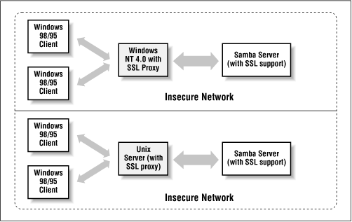

Using Samba
Robert Eckstein, David Collier-Brown, Peter Kelly1st Edition November 1999
1-56592-449-5, Order Number: 4495
416 pages, $34.95
|
|
|
|
|
Using SambaRobert Eckstein, David Collier-Brown, Peter Kelly1st Edition November 1999 1-56592-449-5, Order Number: 4495 416 pages, $34.95 |
A.2 Requirements
To set up SSL connections, you will need to download two programs in addition to Samba:
- SSLeay
Eric Young's implementation of the Secure Socket's Layer (SSL) protocol as a series of Unix programming libraries
- SSL Proxy
A freeware SSL application from Objective Development, which can be used to proxy a secure link on Unix or Windows NT platforms
These two products assist with the server and client side of the encrypted SSL connection. The SSLeay libraries are compiled and installed directly on the Unix system. SSL Proxy, on the other hand, can be downloaded and compiled (or downloaded in binary format) and located on the client side. If you intend to have a Windows NT client or a Samba client on the other end of the SSL connection, you will not require a special setup.
SSL Proxy, however, does not work on Windows 95/98 machines. Therefore, if you want to have a secure connection between a Samba server and Windows 95/98 client, you will need to place either a Unix server or a Windows NT machine on the same subnet with the Windows 9 x clients and route all network connections through the SSL-Proxy-enabled machine. See Figure A.1.
Figure A.1: Two possible ways of proxying Windows 95/98 clients
For the purposes of this chapter, we will create a simple SSL connection between the Samba server and a Windows NT client. This configuration can be used to set up more complex networks at the administrator's discretion.
 |
 |
 |
| A.1 About Certificates |
 | A.3 Installing SSLeay |
Back to: Using Samba
© 1999, O'Reilly & Associates, Inc.